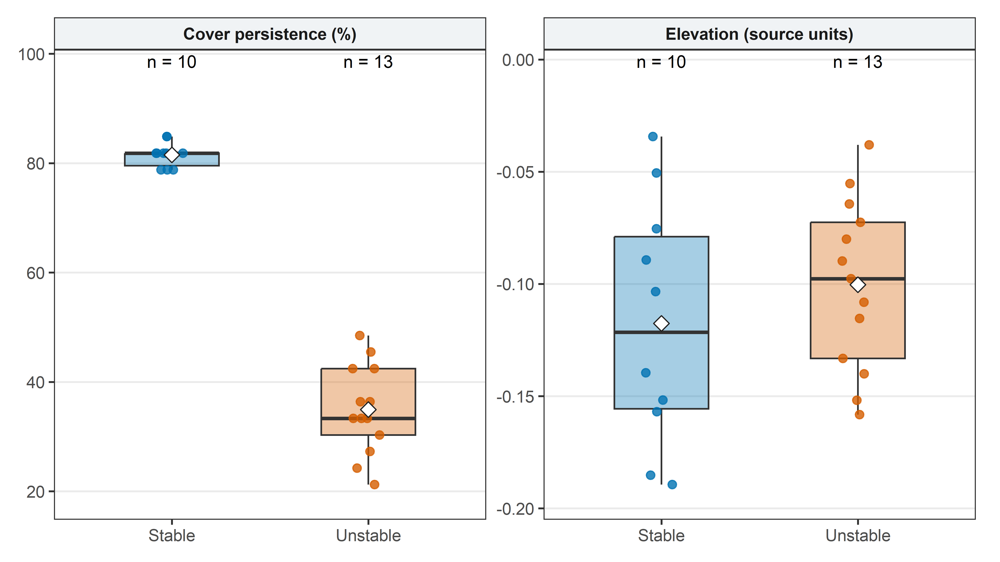

Materials and methods
REWRITE · BB Experiment
This site brings together the methods and results of the REWRITE BB experiment for collaborators. This landing page describes the experimental design and protocols; the results are presented on two dedicated pages.
- Remote sensing results: imagery, derived measurements, and spatial patterns.
- Sampling results: field and laboratory measurements.
Introduction
Seagrass growth is closely coupled to biogeochemical processes in the surrounding sediment. The decomposition of organic matter through microbial sulfate reduction generates sulfide in anoxic sediments, while oxygen released by seagrass roots can promote its oxidation in the rhizosphere. These opposing processes create spatially heterogeneous conditions: in Zostera marina sediments, sulfide concentrations were elevated around buried leaf detritus but reduced near roots (Simpson et al. 2018).
Sulfide accumulation represents a potential constraint on seagrass performance. Sulfide is phytotoxic and can interfere with electron transport in respiration and photosynthesis; its entry into plant tissues is favored when oxygen availability is insufficient to maintain protective oxidation processes (Frederiksen et al. 2008). However, sulfide exposure does not necessarily produce an immediate reduction in growth. Experiments with Z. marina and Posidonia oceanica demonstrated sulfide intrusion and sulfur accumulation in plant tissues without significant short-term effects on growth or mortality, whereas prolonged exposure in P. oceanica was associated with indications of reduced growth and increased mortality (Frederiksen et al. 2008). These findings emphasize the need to distinguish exposure to sulfide from its consequences for plant performance.
Lucinid bivalves offer a biological pathway through which sedimentary sulfide may be removed. Loripes orbiculatus is a member of the Lucinidae, a family characterized by intracellular sulfur-oxidizing bacterial symbionts housed in specialized gill epithelial cells, named bacteriocytes (Anderson 1995; Lim et al. 2019). These bacteria perform chemolithoautotrophy: they use energy obtained from the oxidation of reduced sulfur compounds to fix inorganic carbon, thereby contributing to host nutrition (Anderson 1995; Lim et al. 2019). Sulfide thus acts both as a potential stressor for seagrasses and as an energy substrate for the bivalve’s bacterial symbionts.
This metabolic association provides the basis for a proposed facilitative interaction among seagrasses, lucinid bivalves, and sulfur-oxidizing bacteria. Seagrass-derived oxygen can support the association, while symbiont-mediated sulfide oxidation can alleviate sulfide stress in the surrounding root environment (Lim et al. 2019). Within this framework, the density of L. orbiculatus is a candidate driver of variation in seagrass performance. Whether differences in bivalve density translate into measurable changes in an intertidal meadow is the central question addressed by the present experiment.
Study objectives
The objective of this experiment is to test in situ whether the density of Loripes orbiculatus influences the growth, biomass and morphological characteristics of the intertidal seagrass Zostera noltei.
The working hypothesis is that higher L. orbiculatus density enhances seagrass performance by increasing sulfide removal through the activity of its bacterial endosymbionts. Under conditions in which sulfide stress limits plant performance, this hypothesis predicts greater growth, shoot density, and biomass at higher bivalve densities. This prediction applies the facilitation framework described above to the present study system; it is not an established outcome of the experiment. Changes in plant performance alone would not establish sulfide removal as the causal mechanism.
NoteMethods in preparation
The methods describe the experimental procedures documented to date. Unresolved quantities are denoted by \(X\) and \(X_2\), and LogicielX denotes image-analysis software whose name remains to be confirmed. Outstanding protocol details are marked Details pending.
Study site and timeline
Site selection
The experiment was established on 20 May 2026 in intertidal Zostera noltei meadows in Bourgneuf Bay, adjacent to Noirmoutier Island on the Atlantic coast of France. Two meadow areas were selected to contrast in the temporal persistence of seagrass cover, while exhibiting similar mean bathymetric elevation and within-area variability in elevation.
Temporal persistence of seagrass cover
Site selection used a Sentinel-2 time series beginning in 2017. For each year, the image acquired closest to the annual maximum in seagrass biomass was selected; these acquisitions frequently occurred in September. The normalized difference vegetation index (NDVI) was calculated from near-infrared and red reflectance, and converted to seagrass percentage cover (\(C\)) using the empirical relationship applied by Zoffoli et al. (2021) (their equation 2), originally developed for intertidal Z. noltei-dominated meadows by Zoffoli et al. (2020):
\[ \mathrm{NDVI} = \frac{R_{\mathrm{NIR}}-R_{\mathrm{Red}}}{R_{\mathrm{NIR}}+R_{\mathrm{Red}}}, \qquad C\;(\%) = 172.06\,\mathrm{NDVI}-22.18. \]
The resulting annual cover estimates were reclassified at each pixel using a common threshold:
\[ B_{p,t} = \begin{cases} 1, & C_{p,t} \geq 50\%,\\ 0, & C_{p,t} < 50\%. \end{cases} \]
Temporal persistence was then expressed as the percentage of classified observations in which the pixel attained at least 50% seagrass cover:
\[ F_p = 100\,\frac{n_{1,p}}{n_{1,p}+n_{0,p}}, \]
where \(n_{1,p}\) and \(n_{0,p}\) denote the numbers of observations classified as 1 and 0, respectively. Thus, \(F_p\) describes the frequency of meeting the cover threshold through time; the 50% threshold applies to each annual cover estimate. The area designated as the stable meadow maintained cover of at least 50% in most observations, whereas the unstable meadow met this threshold less consistently.
Bathymetric matching
Litto3D elevation data were obtained at an initial spatial resolution of 1 m and subsequently resampled. The two polygons were selected to have similar mean elevations and standard deviations, while retaining a marked contrast in temporal cover persistence. Both rasters supplied for the comparisons below have a cell size of 19.9 × 19.9 m and use the RGF93 / Lambert-93 coordinate reference system (EPSG:2154). The selected area boundaries and experimental core locations are shown in Figure 1.
Spatial comparison of the selection metrics
Raster values were extracted separately for each polygon on the native grid of each supplied file. Each cell was included when its centre lay inside the polygon, and each included cell received equal weight. Non-finite values were excluded from numerical summaries and counted separately. No interpolation or numerical outlier filtering was applied before calculating the distributions, means, or sample standard deviations. These summaries describe spatial variation within the selected areas; raster cells are not independent experimental replicates.

| Metric | Meadow | Valid cells | Missing cells | Mean | SD | Median | Minimum | Maximum |
|---|---|---|---|---|---|---|---|---|
| Elevation (source units) | Stable | 10 | 0 | -0.118 | 0.055 | -0.122 | -0.189 | -0.034 |
| Cover persistence (%) | Stable | 10 | 0 | 81.52 | 2.24 | 81.82 | 78.79 | 84.85 |
| Elevation (source units) | Unstable | 13 | 0 | -0.100 | 0.038 | -0.098 | -0.158 | -0.038 |
| Cover persistence (%) | Unstable | 13 | 0 | 34.97 | 8.17 | 33.33 | 21.21 | 48.48 |
Mean cover persistence was 81.5% in the stable area and 35.0% in the unstable area. The elevation distributions and their means and standard deviations are reported alongside this contrast to document the degree of bathymetric matching at the supplied raster resolution.
Experimental timeline
Baseline aerial surveys preceded installation and documented the initial meadow condition and intertidal elevation of both study areas. Loripes orbiculatus individuals were collected on 18 May 2026 and prepared in the laboratory for addition to the treatment cores. The experiment was installed on 20 May 2026 and terminated by destructive sampling on 10 September 2026, with the final harvest timed to coincide with the seasonal maximum in meadow biomass. Multispectral surveys and sediment sulfide measurements were conducted monthly during the experiment, while sediment and air temperatures were recorded hourly.
| Date or interval | Experimental activity |
|---|---|
| 16 May 2026 | Baseline multispectral imagery and LiDAR elevation surveys of both meadow areas. |
| 18 May 2026 | Collection of L. orbiculatus, followed by size sorting and preparation of 12 addition groups. |
| 20 May 2026 | Installation of paired control and treatment enclosures, bivalve additions, GNSS positioning, initial core photographs, and deployment of temperature loggers. |
| During the experiment | Monthly multispectral flights and sediment sulfide measurements; hourly sediment and air temperature records. |
| 10 September 2026 | Final harvest, with separate collection of inner-core and outer-core material. |
Experimental design
Spatial arrangement and pairing
An identical paired design was implemented in each meadow area. Six stations were distributed within each selected area, and each station comprised two experimental cores, each approximately 30 cm in diameter: one control and one treatment core. The experiment therefore comprised 12 stations and 24 cores in total, with six control cores and six treatment cores in each meadow area.
Station locations were selected randomly within each meadow area, subject to placement criteria intended to span a broad range of initial seagrass cover and to maintain sufficient separation to minimize potential interactions between neighbouring stations. Interstation distances were consequently variable. Within each station, the control and treatment cores were positioned approximately 1 m apart in patches of comparable initial meadow condition.
The station constituted the spatial pairing unit for the treatment-control comparison, with cores nested within stations and stations nested within meadow areas. This arrangement provides six paired treatment-control comparisons per area. Because each cover-persistence category was represented by a single meadow area, comparisons between the stable and unstable meadows are specific to these two sites; the stations provide replication within areas, rather than independent replication of the meadow categories.
Bivalve collection and treatment preparation
On 18 May 2026, a total of \(X\) L. orbiculatus individuals were collected for the density manipulation. In the laboratory, individuals were sorted into size classes and distributed among 12 groups, with comparable numbers from each size class allocated to every group. Each group contained \(X_2\) individuals and was assigned to one treatment core. This procedure standardized both the number and the size-class composition of the bivalves added across treatment cores.
Details pending — bivalve preparation: Total number collected (\(X\)), number added per treatment core (\(X_2\)), collection location and procedure, size-class boundaries, and holding conditions between collection and installation.
Enclosure installation and density manipulation
Circular enclosures were constructed from mesh bags used in oyster cultivation. The bags were cut transversely to form mesh rings approximately 30 cm in diameter and 20 cm in height. On 20 May 2026, one ring was inserted to a depth of 20 cm at each experimental core location, with its upper edge flush with the sediment surface. The mesh formed a lateral barrier intended to retain L. orbiculatus within the enclosed sediment during the experiment.
Both control and treatment cores received the same type of mesh enclosure. In treatment cores, one prepared group of \(X_2\) individuals was added to the resident L. orbiculatus population. Individuals were placed a few centimetres below the sediment surface at randomly selected positions distributed approximately evenly throughout the enclosure. The manipulation increased bivalve abundance by a standardized number of individuals per treatment core.
Control cores retained their resident L. orbiculatus population and received no additional bivalves. Sediment in control cores was nevertheless manipulated in the same manner as in treatment cores to reproduce the physical disturbance associated with bivalve insertion. The control therefore accounted for both enclosure installation and sediment disturbance during the addition procedure.
The position of each core was recorded using an Emlid Reach RS2+ GNSS receiver receiving real-time corrections from the TERIA network, providing centimetric positioning for subsequent relocation. Each core was photographed at installation, and initial seagrass percentage cover was estimated from these photographs using LogicielX.
Remote sensing methods
Baseline and repeated multispectral surveys
Multispectral imagery of both meadow areas was acquired before installation using a DJI Mavic 3 Multispectral unmanned aerial vehicle to characterize the initial meadow condition. Subsequent surveys were conducted monthly using the same platform and the flight plan established during the baseline survey. The repeated acquisitions provide a temporal record for assessing changes in meadow condition over the experimental period.
Flights were conducted at a nominal height of 20 m, with 80% forward overlap and 70% lateral overlap. Imagery was acquired around low tide under clear skies. The aircraft operated with real-time kinematic (RTK) positioning, and the poles delimiting each study area served as ground control points for image georeferencing.
Multispectral image processing
Overlapping images were processed in DJI Terra1 to produce georeferenced multispectral orthomosaics. In the software’s multispectral reconstruction workflow, visible-light images support aerotriangulation, which estimates the spatial arrangement of the camera positions and imaged scene. This geometric solution is then used to align the multispectral imagery while accounting for the relative positions of the cameras (DJI 2024). Orthorectification and mosaicking combine the overlapping acquisitions into spatially continuous image layers, providing the basis for mapping meadow condition within each survey.
Radiometric correction used incident irradiance recorded by the aircraft’s onboard multispectral sunlight sensor to convert the image measurements to reflectance. This procedure accounts for illumination through the relationship between the reflected signal measured by each camera and the incident irradiance measured by the sunlight sensor (DJI 2023).
Baseline LiDAR elevation survey
On the 16thof may, before installation, both areas were surveyed using a DJI Zenmuse L1 LiDAR sensor mounted on a DJI Matrice 300 aircraft to characterize intertidal surface elevation. This survey provided the initial topographic characterization of the experimental areas, complementing the resampled Litto3D data used for site selection.
Derived measurements
The multispectral time series will be used to quantify the temporal evolution of meadow condition in the two study areas. The specific spectral indices, cover-estimation relationships, spatial units of extraction, and procedures linking imagery to individual experimental cores remain to be specified.
Sampling methods
Temperature monitoring
Temperature loggers manufactured by electricBlue were deployed at installation to record sediment temperature in the stable and unstable meadow areas, together with air temperature. All loggers were programmed at an hourly recording interval.
Monthly sediment sulfide measurements
Sediment sulfide levels were measured monthly during the experiment.
Protocol pending — Hélène: Sampling locations and depths, number of measurements per core or area, collection and preservation procedures, analytical method, sulfide species measured, calibration, detection limits, and reporting units.
Final harvest and separation of sample fractions
All control and treatment cores were harvested on 10 September 2026. At each location, an inner sediment core was collected using a PVC corer with a diameter of 20 cm, inserted to a depth of 20 cm. The sediment remaining between this inner core and the surrounding mesh enclosure was collected separately and designated as the outer core. The inner and outer fractions were kept distinct during subsequent processing because they served different analytical purposes.
Sediment from each fraction was sieved, and bivalves and seagrass material were separated from the retained material. Inner cores provided the samples for bivalve community characterization and seagrass biomass measurements. Outer cores were used to recover the remaining L. orbiculatus individuals and to maximize the collection of seagrass apical shoots for tissue analyses.
Inner-core bivalve composition and seagrass biomass
Bivalves recovered from each inner core were identified to species and counted to characterize species composition and abundance. Seagrass material from the same fraction was separated into aboveground and belowground components, and biomass was determined separately for each component. These measurements were restricted to the standardized inner-core samples.
Outer-core bivalve recovery and seagrass tissue sampling
The outer-core fraction was examined to recover L. orbiculatus remaining outside the inner sampling core but within the enclosure. Seagrass apical shoots were collected from this fraction, with collection intended to maximize the material available for assessing sulfide accumulation in seagrass tissues. Outer-core material was not included in the inner-core estimates of bivalve community composition or seagrass biomass.
Data processing and statistical analysis
Details pending: Data cleaning rules, handling of missing values, response variables, statistical models, treatment of paired and repeated measurements, spatial structure, and the correspondence between remote sensing and sampling observations.
References
Anderson, Amy E. 1995. “Metabolic Responses to Sulfur in Lucinid Bivalves.” American Zoologist 35 (2): 121–31. https://doi.org/10.1093/icb/35.2.121.
DJI. 2023. Mavic 3M Image Processing Guide. https://dl.djicdn.com/downloads/DJI_Mavic_3_Enterprise/20230829/Mavic_3M_Image_Processing_Guide_EN.pdf.
DJI. 2024. DJI Terra Operation Guide. 4.2. https://dl.djicdn.com/downloads/dji-terra/20241008/DJI%20Terra%20Operation%20Guide%20v4.2.pdf.
DJI. 2026. “DJI Terra Download Center.” https://www.dji.com/downloads/products/dji-terra.
Frederiksen, Morten S., Marianne Holmer, Marta Pérez, Olga Invers, Juan Manuel Ruiz, and Birgitte B. Knudsen. 2008. “Effect of increased sediment sulfide concentrations on the composition of stable sulfur isotopes (δ³⁴S) and sulfur accumulation in the seagrasses Zostera marina and Posidonia oceanica.” Journal of Experimental Marine Biology and Ecology 358: 98–109. https://doi.org/10.1016/j.jembe.2008.01.021.
Lim, Shen Jean, Louie Alexander, Annette Summers Engel, Audrey T. Paterson, Laurie C. Anderson, and Barbara J. Campbell. 2019. “Extensive Thioautotrophic Gill Endosymbiont Diversity within a Single Ctena orbiculata (Bivalvia: Lucinidae) Population and Implications for Defining Host-Symbiont Specificity and Species Recognition.” mSystems 4 (4): e00280–19. https://doi.org/10.1128/mSystems.00280-19.
Simpson, Alexandra G., Laura Tripp, David H. Shull, and Sylvia Yang. 2018. “Effects of Zostera marina rhizosphere and leaf detritus on the concentration and distribution of pore-water sulfide in marine sediments.” Estuarine, Coastal and Shelf Science 209: 160–68. https://doi.org/10.1016/j.ecss.2018.05.024.
Zoffoli, Maria Laura, Pierre Gernez, Laurent Godet, Steef Peters, Simon Oiry, and Laurent Barillé. 2021. “Decadal increase in the ecological status of a North-Atlantic intertidal seagrass meadow observed with multi-mission satellite time-series.” Ecological Indicators 130: 108033. https://doi.org/10.1016/j.ecolind.2021.108033.
Zoffoli, Maria Laura, Pierre Gernez, Philippe Rosa, et al. 2020. “Sentinel-2 remote sensing of Zostera noltei-dominated intertidal seagrass meadows.” Remote Sensing of Environment 251: 112020. https://doi.org/10.1016/j.rse.2020.112020.